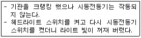
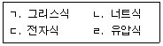
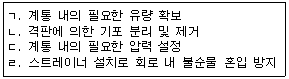

굴삭기운전기능사 (2009-01-18 기출문제)
1. 기관에서 공기청정기의 설치목적으로 맞는 것은?
- 연료의 여과와 가압작용
- 공기의 가압작용
- 공기의 여과와 소음방지
- 연료의 여과와 소음방지
(정답률: 75%)

2. 건설기계 운전 작업 후 탱크에 연료를 가득 채워주는 이유와 가장 관계가 적은 것은?
- 다음 작업을 위해서
- 연료의 기포방지를 위해서
- 연료탱크에 수분이 생기는 것을 방지하기 위해서
- 연료의 압력을 높이기 위해서
(정답률: 74%)
3. 건설기계에서 엔진부조가 발생되고 있다. 그 원인으로 맞는 것은?
- 인젝터 공급파이프 연료 누설
- 인젝터 연료 리턴파이프 연료 누설
- 가속페달 케이블 조정불량
- 자동변속기 고장발생
(정답률: 64%)
4. 건설기계 장비 작업시 계기판에서 오일 경고등이 점등되었을 때 우선 조치사항으로 적합한 것은?
- 엔진을 분해한다.
- 즉시 시동을 끄고 오일계통을 점검한다.
- 엔진오일을 교환하고 운전한다.
- 냉각수를 보충하고 운전한다.
(정답률: 93%)
5. 2행정 사이클 기관에만 해당되는 과정(행정)은?
- 혼입
- 압축
- 동력
- 소기
(정답률: 51%)
6. 직접분사식에 가장 적합한 노즐은?
- 개방형 노즐
- 핀틀형 노즐
- 스로틀형 노즐
- 구멍형 노즐
(정답률: 42%)
7. 기관가열 원인과 가장 거리가 먼 것은?
- 팬벨트가 헐거울 때
- 물 펌프 작용이 불량할 때
- 크랭크축 타이밍기어가 마모되었을 때
- 방열기 코어가 규정이상으로 막혔을 때
(정답률: 59%)
8. 감압장치에 대한 설명으로 옳은 것은?
- 출력을 증가하는 장치
- 연료손실을 감소시키는 장치
- 화염 전파속도를 빨리 해주는 장치
- 시동을 도와주는 장치
(정답률: 42%)
9. 기관 공기청정기의 통기저항을 설명한 것으로 틀린 것은?
- 저항이 적어야 한다.
- 저항이 커야 한다.
- 기관출력에 영향을 준다.
- 연료소비에 영향을 준다.
(정답률: 61%)
10. 디젤기관의 윤활유 압력이 낮은 원인이 아닌 것은?
- 점도지수가 높은 오일을 사용하였다.
- 윤활유의 양이 부족하다.
- 오일펌프가 과대 마모되었다.
- 윤활유 압력 릴리프 밸브가 열린 채 고착되어 있다.
(정답률: 63%)
11. 기관에서 실화(miss fire)가 일어났을 때 현상으로 맞는 것은?
- 엔진의 출력이 증가한다.
- 연료소비가 적다.
- 엔진이 과냉한다.
- 엔진회전이 불량하다.
(정답률: 69%)
12. 건설기계 기관에 있는 팬벨트의 장력이 약할 때 생기는 현상으로 맞는 것은?
- 발전기 출력이 저하될 수 있다.
- 물 펌프 베어링이 조기 손상된다.
- 엔진이 과냉된다.
- 엔진이 부조를 일으킨다.
(정답률: 48%)
13. 12V 축전지 4개를 병렬로 연결하면 전압은?
- 12V
- 24V
- 36V
- 48V
(정답률: 66%)
14. 겨울철에 기동전동기 크랭킹 회전수가 낮아지는 원인이 아닌 것은?
- 엔진오일의 점도가 상승
- 온도에 의한 축전지의 용량감소
- 점화스위치의 저항증가
- 기온저하로 기동부하 증가
(정답률: 44%)
15. 건설기계장비에서 다음과 같은 상황의 경우 고장원인으로 가장 적합한 것은?

- 축전지 방전
- 솔레노이드 스위치 고장
- 회로의 단선
- 시동모터 배선의 단선
(정답률: 75%)
16. 건설기계에서 윈드 실드 와이퍼를 작동시키는 형식으로 가장 일반적으로 사용하는 것은?
- 압축 공기식
- 기계식
- 진공식
- 전기식
(정답률: 57%)
17. 건설기계 기관에 사용되는 축전지의 가장 중요한 역할은?
- 주행 중 점화장치에 전류를 공급한다.
- 주행 중 등화장치에 전류를 공급한다.
- 주행 중 발생하는 전기부하를 담당한다.
- 기동장치의 전기적 부하를 담당한다.
(정답률: 55%)
18. 다음은 건설기계 교류발전기의 특징이다. 아닌 것은?
- 브러시 수명이 길다.
- 실리콘 다이오드로 정류하므로 전기적 용량이 크다.
- 저속에서도 충전 가능한 출력전압이 발생한다.
- 전류조정기만 있으면 된다.
(정답률: 67%)
19. 기중 작업에서 물체의 무게가 무거울수록 붐 길이와 각도는 어떻게 하는 것이 좋은가?
- 붐 길이는 길게, 각도는 크게
- 붐 길이는 짧게, 각도는 그대로
- 붐 길이는 짧게. 각도는 작게
- 붐 길이는 짧게, 각도는 크게
(정답률: 59%)
20. 타이어 림에 대한 설명 중 틀린 것은?
- 경미한 균열은 용접하여 재사용한다.
- 변형 시 교환한다.
- 경미한 균열도 교환한다.
- 손상 또는 마모 시 교환한다.
(정답률: 84%)
21. 로더의 토사 깎기 작업방법으로 잘못 된 것은?
- 특수 상황 외에는 항상 로더가 평행되도록 한다.
- 로더의 무게가 버킷과 함께 작용되도록 한다.
- 깎이는 깊이 조정은 붐을 약간 상승시키거나 버킷을 복귀시켜서 한다.
- 버킷의 각도는 35°~45°로 깎기 시작하는 것이 좋다.
(정답률: 45%)
22. 다음 보기 중 무한궤도형 건설기계에서 트랙긴도 조정방법으로 모두 맞는 것은?

- ㄱ,ㄷ
- ㄱ,ㄴ
- ㄱ,ㄴ,ㄷ
- ㄴ,ㄷ,ㄹ
(정답률: 42%)
23. 깨지기 쉬운 화물이나 불안전한 화물의 낙하를 방지하기 위하여 포크상단에 상하 작동할 수 있는 압력판을 부착한 지게차는?
- 하이 마스트
- 사이드 스프트 마스트
- 로드 스태이빌라이저
- 3단 마스트
(정답률: 42%)
24. 굴삭 작업시 작업능력이 떨어지는 원인으로 맞는 것은?
- 트랙 슈에 주유가 안 됨
- 릴리프 밸브 조정 불량
- 조향핸들 유격과다
- 아워미터 고장
(정답률: 63%)
25. 기계식 변속기가 장착된 건설기계장비에서 클러치가 미끄러지는 원인으로 맞는 것은?
- 클러치페달의 유격이 크다.
- 릴리스 레버가 마멸되었다.
- 클러치 압력판 스프링이 약해졌다.
- 파일럿 베어링이 마멸되었다.
(정답률: 48%)
26. 건설기계에서 변속기의 구비조건으로 맞는 것은?
- 대형이고, 고장이 없어야 한다.
- 조작이 쉬우므로 신속할 필요는 없다.
- 연속적 변속에는 단계가 있어야 한다.
- 전달효율이 좋아야 한다.
(정답률: 67%)
27. 건설기계 운전자가 조종 중 고의로 중상 2명, 경상 5명의 사고를 일으킬 때 면허 처분기준은?
- 면허취소
- 면허효력정지 30일
- 면허효력정지 20일
- 면허효력정지 10일
(정답률: 80%)
28. 건설기계 관련법상 건설기계 대여를 업으로 하는 것은?
- 건설기계대여업
- 건설기계정비업
- 건설기계매매업
- 건설기계폐기업
(정답률: 86%)
29. 건설기계 범위에 해당되지 않는 것은?
- 아스팔트 믹싱 플랜트
- 아스팔트 살포기
- 아스팔트 피니셔
- 아스팔트 커터
(정답률: 47%)
30. 건설기계를 운전하여 교차로 전방 20m 지점에 이르렀을 때 황색 등화로 바뀌었을 경우 운전자의 조치방법은?
- 일시 정지하여 안전을 확인하고 진행한다.
- 정지할 조치를 취하여 정지선에 정지한다.
- 그대로 계속 진행한다.
- 주위의 교통에 주의하면서 진행한다.
(정답률: 80%)
31. 교차로 통과에서 가장 우선하는 것은?
- 운전자의 임의 판단
- 안내판의 표시
- 경찰공무원의 수신호
- 신호기의 신호
(정답률: 87%)
32. 도로주행에 대한 설명으로 가장 거리가 먼 것은?
- 도로 파손으로 인한 장애물로 도로의 우측부분을 통행할 수 없을 때 도로 의 좌측부분을 통행할 수 있다.
- 도로의 차선구분이 좌측부분을 확인할 수 없을 경우에는 도 로 중앙을 통행할 수 없다.
- 차마는 안전표지로써 특별히 진로변경이 금지된 곳에서는 진로를 변경해서는 안 된다.
- 차마의 교통을 원활하게 하기 위한 가변차로가 설치된 곳도 있다.
(정답률: 64%)
33. 임시운행 사유에 해당되는 것은?
- 작업을 위하여 건설현장에서 건설기계를 운행할 때
- 정기검사를 받기 위하여 건설기계를 검사장소로 운행할 때
- 등록신청을 위하여 건설기계를 등록지로 운행할 때
- 등록말소를 위하여 건설기계를 폐기장으로 운행할 때
(정답률: 61%)
34. 건설기계 검사기준 중 제동장치의 제동력으로 맞지 않는 것은?
- 모든 축의 제동력의 합이 당해 축중(빈차)의 50%이상일 것
- 동일 차축 좌·우 바퀴의 제동력의 편차는 당해 축중의 8% 이내 일 것
- 뒤차축 좌·우 바퀴의 제동력의 편차는 당해 축중의 15%이내 일 것
- 주차제동력의 합의 건설기계 빈차 중량의 20%이상일 것
(정답률: 38%)
35. 1년 간 벌점에 대한 누산점수가 최소 몇 점 이상이면 운전면허가 취소되는가?
- 190
- 271
- 121
- 201
(정답률: 61%)
36. 다음 중 정차 및 주차가 금지되어 있지 않은 장소는?
- 횡단보도
- 교차로
- 경사로의 정상부근
- 건널목
(정답률: 81%)
37. 공동현상이라고도 하며 이 현상이 발생하면 소음과 진동이 발생하고, 양정과 효율이 저하되는 현상은?
- 캐비테이션
- 스크로크
- 제로랩
- 오버랩
(정답률: 71%)
38. 다음 보기 중 유압 오일탱크의 기능으로 모두 맞는 것은?

- ㄱ,ㄴ,ㄷ
- ㄱ,ㄴ,ㄹ
- ㄴ,ㄷ,ㄹ
- ㄱ,ㄷ,ㄹ
(정답률: 51%)
39. 유압유의 노화촉진 원인이 아닌 것은?
- 유온이 높을 때
- 다른 오일이 혼입되었을 때
- 수분이 혼입되었을 때
- 플러싱을 했을 때
(정답률: 69%)
40. 유압장치의 기호 회로도에 사용되는 유압 기호의 표시방법으로 적합하지 않는 것은?
- 기호에는 흐름의 방향을 표시한다.
- 각 기기의 기호는 정상상태 또는 중립상태를 표시한다.
- 기호는 어떠한 경우에도 회전하여서는 안 된다.
- 기호에는 각 기기의 구조나 작용압력을 표시하지 않는다.
(정답률: 60%)
41. 건설기계에서 유압작동기 (액추에이터)의 방향전환 밸브로서 원통형 슬리브 면에 내접하여 축방향으로 이동하여 유로를 개폐하는 형식의 밸브는?
- 스풀형식
- 포핏형식
- 베인형식
- 카운터 밸런스 밸브형식
(정답률: 39%)
42. 구동되는 기어펌프의 회전수가 변하였을 때 가장 적합한 것은?
- 오일의 유량이 변한다.
- 오일의 압력이 변한다.
- 오일 흐름방향이 변한다.
- 회전 경사판의 각도가 변한다.
(정답률: 41%)
43. 오일의 압력이 낮아지는 원인이 아닌 것은?
- 오일펌프의 마모
- 오일의 점도가 높아졌을 때
- 오일의 점도가 낮아졌을 때
- 계통 내에서 누설이 있을 때
(정답률: 70%)
44. 가스형 축압기(어큐뮬레이터)에 가장 널리 이용되는 가스는?
- 질소
- 수소
- 아르곤
- 산소
(정답률: 64%)
45. 유압회로의 최고압력을 제한하는 밸브로서 회로의 압력을 일정하게 유지시키는 밸브는?
- 체크밸브
- 감압밸브
- 릴리프밸브
- 카운터밸런스 밸브
(정답률: 56%)
46. 베인모터는 항상 베인을 캠링(cam ring)면에 압착시켜두어야 한다. 이 때 사용하는 장치는?
- 볼트와 너트
- 스프링 또는 로킹 빔(locking beam)
- 스프링 또는 배플 플레이트
- 캠링 홀더(cam ring holder)
(정답률: 31%)
47. 재해조사 목적을 가장 확실하게 설명한 것은?
- 적절한 예방대책을 수립하기 위하여
- 재해를 발생케 한 자의 책임을 추궁하기 위하여
- 재해 발생 상태와 그 동기에 대한 통계를 작성하기 위하여
- 작업능률 향상과 근로기강 확립을 위하여
(정답률: 75%)
48. 작업과 안전보호구의 연결이 잘못된 것은?
- 그라인딩 작업 - 보안경 착용
- 10m 높이에서의 작업 - 안전벨트 착용
- 산소결핍 장소 - 공기 마스크 착용
- 아크용접 - 도수렌즈 안경 착용
(정답률: 80%)
49. 스패너 렌치의 사용법이 잘못된 것은?
- 너트에 맞는 것을 사용한다.
- 스패너를 앞으로 당겨 돌린다.
- 경우에 따라 해머작업에 사용한다.
- 파이프 피팅을 풀고 조일 때 사용한다.
(정답률: 78%)
50. 수공구를 취급 시 지켜야 될 안전수칙으로 옳은 것은?
- 줄질 후 쇳가루는 입으로 불어낸다.
- 해머 작업시 손에 장갑을 끼고 한다.
- 사용 전에 충분한 사용법을 숙지하고 익히도록 한다.
- 큰 회전력이 필요한 경우 스패너에 파이프를 끼워서 사
(정답률: 81%)
51. 리프트(lift)의 방호장치가 아닌 것은?
- 해지장치
- 출입문 인터록
- 권과 방지장치
- 과부하 방지장치
(정답률: 39%)
52. 화재의 분류에서 전기화재에 해당되는 것은?
- A급 화재
- B급 화재
- C급 화재
- D급 화재
(정답률: 74%)
53. 안전표지의 종류 중 안내표지에 속하지 않는 것은?
- 녹십자 표지
- 응급구호 표지
- 비상구
- 출입금지
(정답률: 56%)
54. 안전작업 사항으로 잘못된 것은?
- 전기장치는 접지를 하고, 이동식 전기기구는 방호장치를 한다.
- 엔진에서 배출되는 일산화탄소에 대비한 통풍장치를 설치한다.
- 담뱃불은 발화력이 약하므로 제한장소 없이 흡연해도 무방하다.
- 주요장비 등은 조직자를 지정하여 누구나 조작하지 않도록 한다.
(정답률: 90%)
55. 작업장에서 지켜야할 안전수칙이 아닌 것은?
- 작업 중 입은 부상은 즉시 응급조치를 하고 보고한다.
- 밀폐된 실내에서는 시동을 걸지 않는다.
- 통로나 마룻바닥에 공구나 부품을 방치하지 않는다.
- 기름걸레나 인화 물질은 나무 상자에 보관한다.
(정답률: 86%)
56. 작업장에서 용접작업의 유해광선으로 눈에 이상 생겼을 때 조치로 맞는 것은?
- 손으로 비빈 후 과산화수소로 치료한다.
- 냉수로 씻어낸 냉수포를 얹거나 병원에서 치료한다.
- 알코올로 씻는다.
- 뜨거운 물로 씻는다.
(정답률: 89%)
57. 154kV 송전철탑 근접 굴착잡업시 안전사항으로 옳은 것은?
- 철탑이 일부 파손되어도 재질이 철이므로 안전에는 전혀 영향이 없다.
- 철탑의 지표상 노출부와 지하 매설부 위치는 다른 것을 감안하여 임으로 판단하여 작업한다.
- 철탑 부지에서 떨어진 위치에서 접지선이 노출되어 단선 되었을 경우라도 시설 관리자에게 연락을 취한다.
- 작업시 전력선에 접촉만 되지 않도록 하면 된다.
(정답률: 84%)
58. 10옴의 저항에 2A의 전류가 흐를 때 저항의 전압은 얼마인가?
- 5V
- 16V
- 24V
- 20V
(정답률: 52%)
59. 가스배관 작업 시 주의사항으로 틀린 것은?
- 가스배관과의 수평거리 30cm 이내에서 파일 박기를 금지할 것
- 가스배관의 좌우 1m 이내의 부분은 인력으로 굴착할 것
- 공사 착공 전에 도시가스사업자와 현장협의를 통해 각종 사 항 및 안전조치를 상호 확인할 것
- 가스배관과의 수평거리 3m 이내에서 파일박기를 하고자 할 때 도시가스 사업자의 입회하여 시험굴착을 할 것
(정답률: 48%)
60. 가스 공급압력이 중압이상의 배관 상부에 보호판을 사용하고 있다. 이 보호판에 대한 설명으로 틀린 것은?
- 배관 작상부 30cm 상단에 매설되어 있다.
- 두께가 4mm 이상의 철판으로 방식 코팅되어 있다.
- 보호판은 가스가 누출되지 않도록 하기 위한 것이다.
- 보호판은 철판으로 장비에 의한 배관손상을 방지하기 위하여 설치한 것이다.
(정답률: 58%)